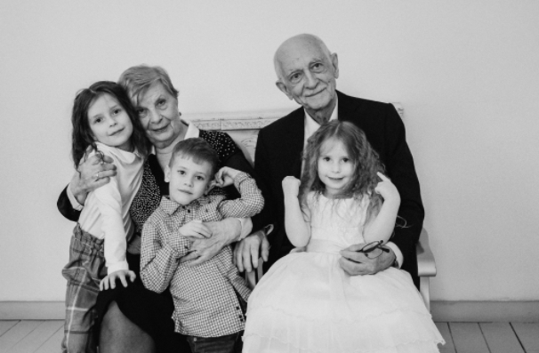

Исаевы
В нашем небольшом городке жили мы, семья Кузнецовых. Отец, Алексей, был виртуозом на гитаре, мама, Наталья, великолепно играла на скрипке, а мы, дети – Дмитрий, Любовь, Владимир и Мария – В нашем небольшом городке жили мы, семья Кузнецовых. Отец, Алексей, был виртуозом на гитаре, мама, Наталья, великолепно играла на скрипке, а мы, дети – Дмитрий, Любовь, Владимир и Мария –
В нашем небольшом городке жили мы, семья Кузнецовых. Отец, Алексей, был виртуозом на гитаре, мама, Наталья, великолепно играла на скрипке, а мы, дети – Дмитрий, Любовь, Владимир и Мария – В нашем небольшом городке жили мы, семья Кузнецовых. Отец, Алексей, был виртуозом на гитаре, мама, Наталья, великолепно играла на скрипке, а мы, дети – Дмитрий, Любовь, Владимир и Мария –